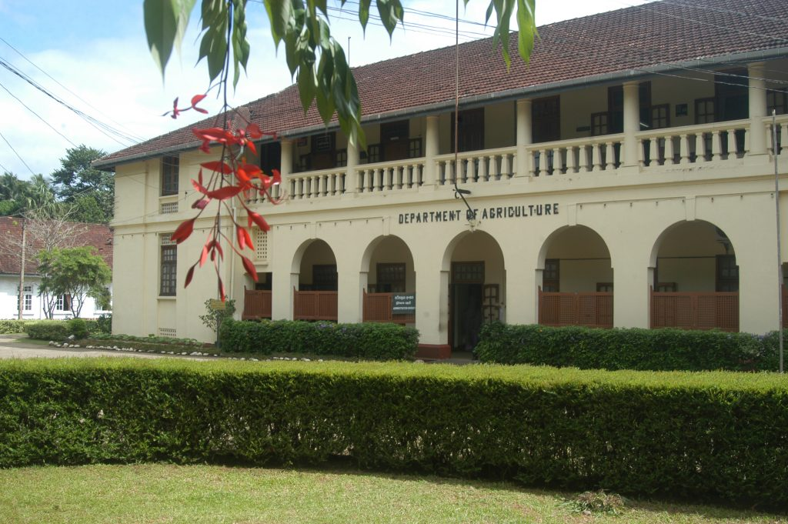

Vision
“Achieve excellence in agriculture for national prosperity”.

Mission
“Achieve an equitable and sustainable agriculture development, ensuring nations food and nutrition security through development and dissemination of improved agriculture technology and provide the relevant services to the all stakeholders with more emphasis to the farmers”.
Objectives
Maintaining and increasing productivity and production of the food crop sector for the purpose of enhancing the income and living condition of the farmer and making food available at affordable prices to the consumer..

Main Functions
Agricultural Research
Technology Dissemination
Seed and planting material production and distribution
Regulatory services.

Institutes Centres
Rice Research and Development Institute
Field Crops Research and Development Institute
Horticultural Crops Research and Development Institute
Fruit Research and Development Institute
Natural Resources Management Centre
Socio Economics and Planning Centre
Extension Training Centre
National Agriculture Information Communication Centre
Seed and Planting Material Development Center
Seed Certification and Plant Protection Centre
Administration Division
Establishment Division
Finance Division
Engineering Division
Progress Monitoring Evaluation Unit
Internal Audit Division
.